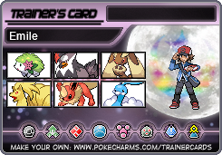
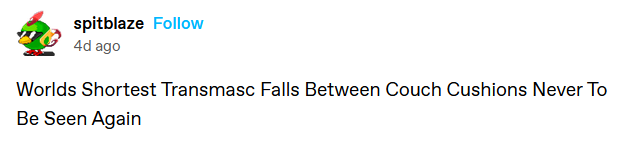
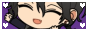
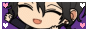
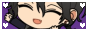
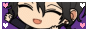
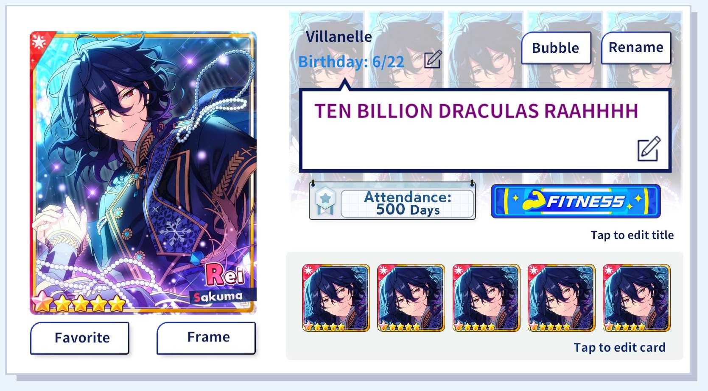

About the Webmaster
- Name: Emile
- Pronouns: she/they
- Favorite colors: red and black
- Favorite animals: rodents
- Favorite music: early 2000's pop/pop punk
- Favorite Tamagotchis: Lovelitchi, Watawatatchi, Clione Deviltchi
- Favorite Animal Crossing villager: Hugh
- Favorite Enstars units: Ra*bits, fine
I'm a writer with a Bachelor's in Creative Writing, but really I'm also just a transguy hobbyist artist and someone who's online a lot. I like toys and cute things, and in my spare time I crochet and knit. I enjoy learning new things too, and I try my best to study languages (Japanese and ASL) on the side. My gender is "boy who is a princess." 👑
I was taught the basics of HTML as early as middle school, so I guess I've been working with HTML for a long time! I've always liked seeing what I could do with it even without a real website. I didn't do much coding for a long time until I learned about Neocities; after being inspired by others' pages, I built this website in order to have a place to express myself. Cuteness is comforting and hopeful for me, so this is a personal place with all the things I love packed into it. The concept of the small web is something I enjoy, as social media has left me frustrated and burnt out. I've enjoyed the culture of Neocities a lot since I've joined!
My URL is a reference to the UNDEAD song Honey Milk wa Okonomi de (or Honey Milk As You Like). My footer is one of Rei's in-game voice lines. This site is built around the feelings and aesthetics that Honey Milk brings to mind!
I hope you enjoy yourself on my website. o(*￣︶￣*)o



My buttons
Feel free to take one to link to me!
80 x 15
88 x 31
  
 
English Ensemble Stars!! Music Profile
